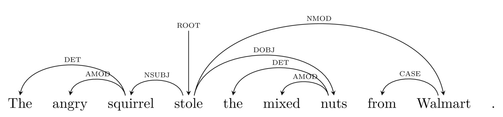
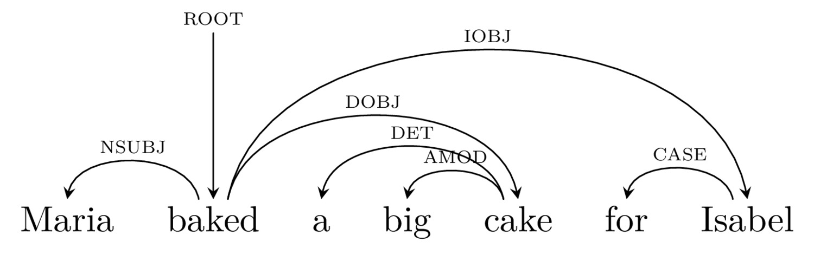
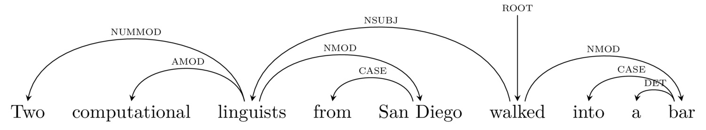
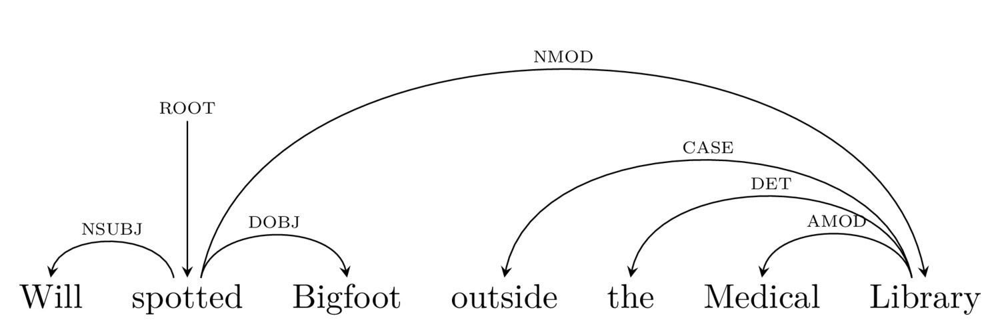
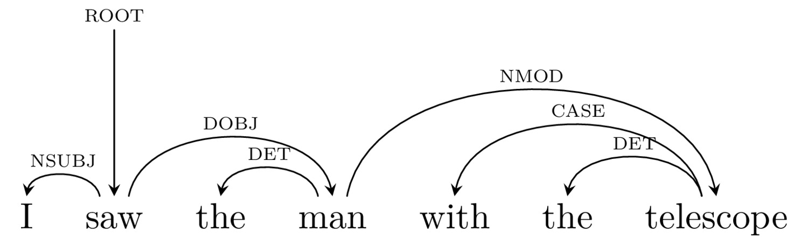
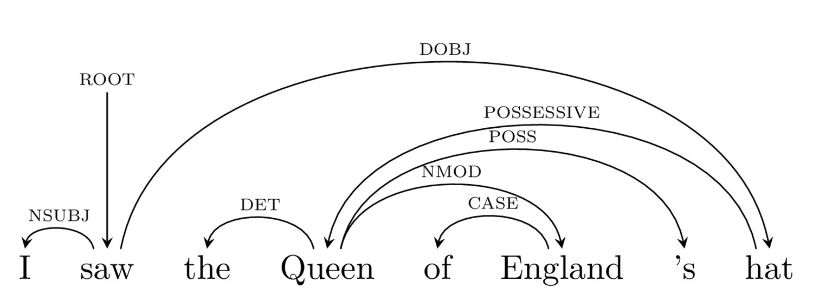
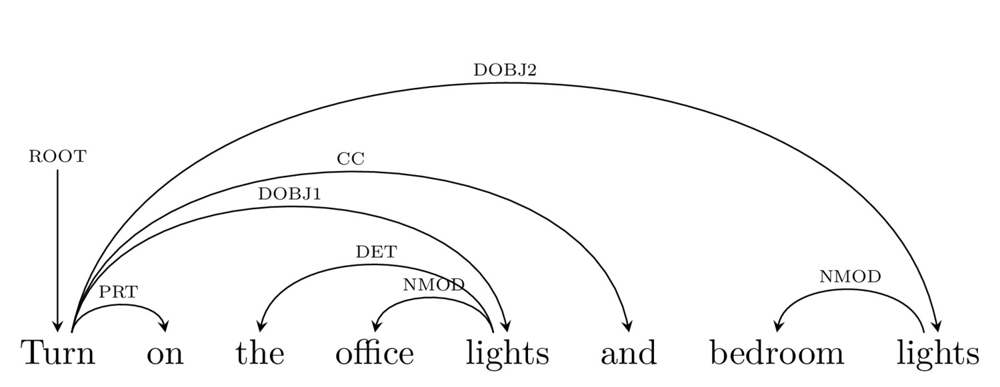
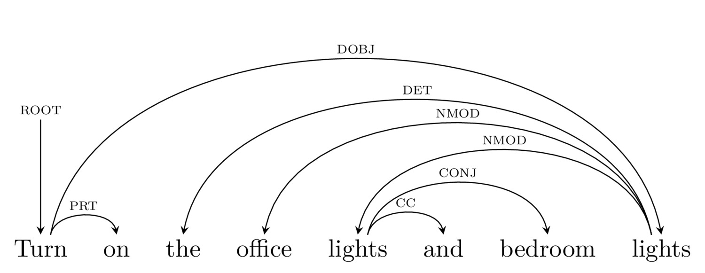

http://savethevowels.org/resources
Constituency vs. Dependency Parsing
What is dependency parsing?
How do we do dependency parsing automatically?
Why do we use dependency parsing in NLP?
How is syntactic parsing actually useful for natural language processing?
A hierarchy of phrases, containing other phrases
From this, we can get a sense of constituency
… as well as of attachment
Also called ‘Context Free Grammars’ by computer scientists
A series of rules applied which detail grammatical and ungrammatical sentences
With other rules describing changes (e.g. movement, etc)
For asking linguistic questions, constituency is crucial
It shows the units on which syntax operates
It’s better to generate new sentences
It handles recursion
“The cat jumped onto the table”
“I poked the big bear with a stick”
“I touched the Queen of England’s hat”
“Jony chased Dieter”
“Jessica ate the veggie burger”
“Felicia gave Juan a drink”
“My aunt bought three cars and set them on fire”
Describe the nature of that connection (who did what to whom)
… and skip some of the phrase structure questions
 |
Focus on demonstrating the relationship between elements in the sentence
Dependency (‘what’s attached to what’)
Relations (‘Who’s doing what to whom’)
Visualizes this as a series of relationships


Words are connected to the words that ‘depend’ on them
Every word is connected to another
‘Subject’ - The ‘do-er’ of the verb
‘Direct Object’ - The ‘target’ of the verb
‘Indirect Object’ - Often used for recipients
Modifiers - Words that make the meaning of each word more specific



From Jurafsky and Martin ‘Speech and Language Processing’ 2018
Here’s a link to the full guidelines




Focuses on demonstrating the relationship between elements in the sentence
Dependency (‘what’s attached to what’)
Relations between arguments (‘Who’s doing what to whom’)
Misses some linguistic insight, but gets what we want for NLP

They examine each part of the sentence, and use machine learning to decide the proper relationships
… but they’re a bit too complex (and linguistically uninteresting) for this class
The Arc Standard approach is most commonly used






Right now, dependency parsing is faster than constituency parsing
This might change with new algos and approaches!

If $ROOT == "send"
If $DOBJ == ("text" | "message" | "sms")
$NUMBER = get.phonenumber($IOBJ)
If $AMOD.DOBJ == "romantic":
$MESSAGE = "omg ilu soooo much sweetie uwu üòç"
If $AMOD.DOBJ == "mean":
$MESSAGE = "I ate your leftover enchiladas and they were gooooood"
SEND.SMS $message TO $numberIf $ROOT == "turn on"
If $DOBJ == "lights"
ACTIVATE lights location $NMOD.DOBJ



“I didn’t find a device named ‘office lights bedroom lights’”
… in a way that a human would never fail
This is hard, but it’s fascinating
Although most linguists do theory with constituency, in NLP, dependency is king
Dependency parsing focuses on finding links between words and their types
Dependency parsing has many advantages over constituency in NLP
Dependency Parsing is useful for actual engineering tasks!